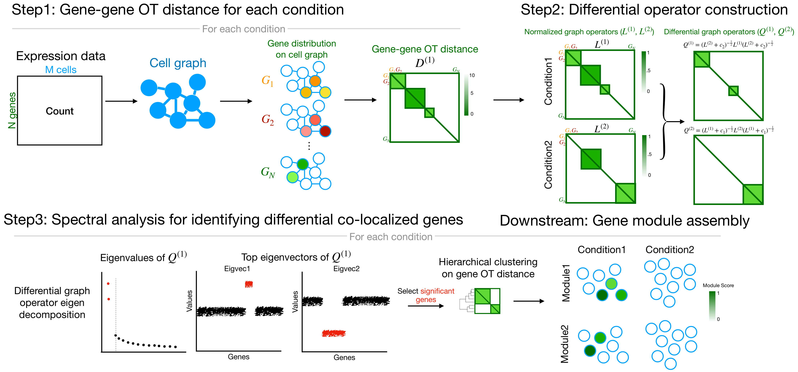
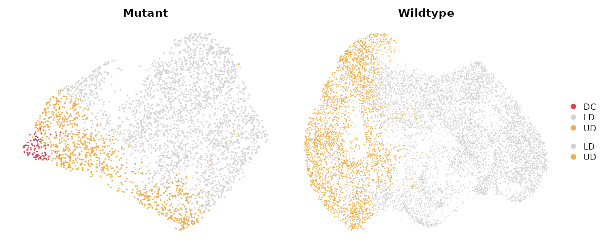
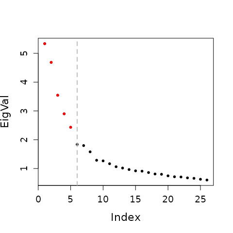
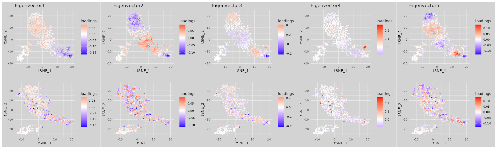

Overview
Differential Co-Localization analysis (DiCoLo) is a computational framework designed for capturing condition-specific co-localized gene patterns within single-cell RNA sequencing data. The major workflow of DiCoLo comprises the following three main steps:
- Step1. Compute gene-gene OT distance for each condition
- Step2. Construct differential graph operator
- Step3. Identify differential co-localized genes by spectral analysis
- Downstream tasks
- Assemble significant DiCoLo genes into co-localized gene modules.

Loading example data
We use a 10x mouse embryonic skin dataset which includes a SmoM2 mutant sample with a paired wildtype control (CTL) sample. The preprocessed Seurat object for this tutorial can be downloaded from figshare for Mutant and figshare for Wildtype.
dir.path.data = "~/" # Specify the directory path where you want to save the data
file_name1 = "data_S_smom2_dermal_E13.5_MUT.rds" # Specify the file name for saving the mutant
file_name2 = "data_S_smom2_dermal_E13.5_CTL.rds" # Specify the file name for saving the wildtype
data_S_MUT <- readRDS(file = file.path(dir.path.data,file_name1))
data_S_CTL <- readRDS(file = file.path(dir.path.data,file_name2))
p1 = DimPlot(data_S_MUT,
group.by = "celltype", shuffle = TRUE, cols = c("DC"="#d1495b", "UD" = "#edae49", "LD" = "#d3d3d3")) + ggtitle("Mutant") & NoAxes()
p2 = DimPlot(data_S_CTL,
group.by = "celltype", shuffle = TRUE, cols = c("DC"="#d1495b", "UD" = "#edae49", "LD" = "#d3d3d3")) + ggtitle("Wildtype") & NoAxes()
p1 + p2 + plot_layout(guides = "collect")
Step1: Compute Gene-gene OT distance for each condition
In this tutorial, we adapt the framework of GeneTrajectory(Qu et al. 2024) to compute the gene-gene OT distance per condition. We start by select the genes expressed in 0.5–50% of cells and ranked among the top 500 highly variable genes (HVGs) within each sample. Genes detected in fewer than one cell in either sample are excluded and we use the union of the filtered gene sets for downstream computation.
common_genes = SelectCommonGenes(data_S_MUT,data_S_CTL,
ngenes = 500)The computation of gene-gene OT distances is employing GeneTrajectory
framework (see the Compute
gene-gene distances section). We (a) install GeneTrajectory in R,
(b) ensure Python is available (either python or
python3 on your system PATH), and (c) install the Python
POT library. To keep the R session responsive, the computation runs in
the background with multiple processes (default: 8). The expected
running time for this step is approximately 5~10 minutes.
Install (one time)
# --- R side: install GeneTrajectory ---
if (!requireNamespace("GeneTrajectory", quietly = TRUE)) {
if (!requireNamespace("devtools", quietly = TRUE)) install.packages("devtools")
devtools::install_github("KlugerLab/GeneTrajectory")
}
# --- Python side: install POT ---
# Find a usable python executable (python3 preferred)
py <- Sys.which("python3")
if (py == "") py <- Sys.which("python")
if (py == "") stop("No Python found. Please install Python and ensure it is on your PATH.")
# Install/upgrade POT in that Python
cmd <- sprintf('"%s" -m pip install -U https://github.com/PythonOT/POT/archive/master.zip', py)
message("Installing/Updating POT with: ", cmd)
system(cmd)Run the OT distance computation
dir.path.MUT = "~/GeneTrajectory_MUT" # Specify the folder name for saving the MUT OT distance
dir.path.CTL = "~/GeneTrajectory_CTL" # Specify the folder name for saving the CTL OT distance
ComputeGeneEMD(data_S_MUT, common_genes, dir.path = dir.path.MUT)
ComputeGeneEMD(data_S_CTL, common_genes, dir.path = dir.path.CTL)Load OT distance
gene.dist.mat_MUT = LoadGeneEMD(file.path(dir.path.MUT,""))
gene.dist.mat_CTL = LoadGeneEMD(file.path(dir.path.CTL,""))Step2: Construct differential graph operators
We next build normalized graph operators and differential graph operators based on the OT distance matrices. Each condition-specific graph operator is first computed from its gene–gene OT distance matrix, and the differential operators are then constructed by comparing the mutant and control graphs.
gene.graph_MUT = ComputeGraphOperator(gene.dist.mat_MUT)
gene.graph_CTL = ComputeGraphOperator(gene.dist.mat_CTL)
diff.op_MUT = ComputeDifferentialOperator(gene.graph_MUT,gene.graph_CTL)
diff.op_CTL = ComputeDifferentialOperator(gene.graph_CTL,gene.graph_MUT)Step3: Spectral analysis to identify differential co-localization patterns
We perform a spectral decomposition of the differential operator
(e.g., diff.op_MUT). Significant components are selected by
the knee point of the eigenvalue spectrum.
The example below uses the MUT differential operator; the same procedure applies to CTL.
Select significant components via knee point.
n_eigvec = FindKneePoint(eigen_list$values[1:floor(sqrt(length(eigen_list$values)))],plot.fig = TRUE) - 1
Visualize the significant eigenvectors on gene embeddings for MUT and CTL, where each gene embedding is obtained by applying t-SNE to the OT distance matrix computed from Step1
tsne_MUT = ObtainGeneTSNE(as.dist(gene.dist.mat_MUT))
tsne_CTL = ObtainGeneTSNE(as.dist(gene.dist.mat_CTL))
pl = lapply(1:n_eigvec,function(i){
gene_partition = setNames(eigen_list$vectors[,i],rownames(eigen_list$vectors))
p1 = VisualizeGeneTSNE(gene_embedding = tsne_MUT,
gene_partition = gene_partition, filtered = FALSE) +
ggtitle(paste0("Eigenvector",i)) + labs(color = "loadings")
p2 = VisualizeGeneTSNE(gene_embedding = tsne_CTL,
gene_partition = gene_partition, filtered = FALSE) + ggtitle("") + labs(color = "loadings")
p1 / p2
})
wrap_plots(pl, nrow = 1)
Each selected eigenvector highlights genes with large absolute loadings that cluster closely together in the MUT condition (top row) but appear more dispersed in the CTL condition (bottom row), indicating that these genes are co-localized in MUT but not in CTL.
Downstream: Gene module assembly
After identifying significant eigenvectors from the differential graph operator, DiCoLo assembles co-localized gene modules by selecting high-loading genes and clustering them based on their gene–gene OT distances.
Select significant genes from eigenvectors
For each selected eigenvector, we extract genes with large absolute
loadings. Loadings are first standardized (z-scores), and significance
is determined using a local false discovery rate (localFDR) model
locfdr::locfdr. Genes are selected with their estimated FDR
below the threshold returned by the model.
gene_loadings = eigen_list$vectors[,1:n_eigvec]
gene_indictors = SelectSignificantGenes(gene_loadings)
pl = lapply(1:ncol(gene_indictors),function(i){
VisualizeGeneTSNE(gene_embedding = tsne_MUT,
gene_partition = as.factor(gene_indictors[,i]),
filtered = FALSE, text = FALSE,
module_color = c("1"="red","0"="lightgrey")) +
labs(color = "Signif. genes") + ggtitle(paste0("Eigenvector",i))
})
wrap_plots(pl, nrow = 1) + plot_layout(guides = "collect") Significant genes are highlighted in red for each selected eigenvector
and overlaid on the MUT gene embedding.
Significant genes are highlighted in red for each selected eigenvector
and overlaid on the MUT gene embedding.
Cluster significant genes into modules
Significant genes are then grouped into modules based on their OT
distances computed in Step1.
We perform hierarchical clustering (stats::hclust, method =
average) on the OT distance matrix and cut the dendrogram
using dynamicTreeCut::cutreeDynamic to obtain coherent,
co-localized gene modules. To ensure module quality, genes with mean
intra-module distances greater than \(median+3\times MAD\) are excluded as
outliers. Only modules containing at least 5 genes are retained for
downstream analysis.
signf_genes = rownames(gene_indictors)[rowSums(gene_indictors) > 0]
gene_modules = ClusterGenes(as.dist(gene.dist.mat_MUT[signf_genes,signf_genes]),min_gene = 5, deepSplit = 0)
#> ..cutHeight not given, setting it to 7.57 ===> 99% of the (truncated) height range in dendro.
#> ..done.The importance of the each gene module can be ranked based on how strongly its member genes are represented across the selected eigenvectors, with higher ranks given to those dominated by high-significance eigenvectors.
gene_modules = RankGeneModules(gene_modules,gene_indictors,eigen_list$values)
VisualizeGeneTSNE(gene_embedding = tsne_MUT,
gene_partition = gene_modules,
filtered = FALSE, text = FALSE) + ggtitle("MUT DiCoLo gene modules")
Visualize module activity across cells
Module activity scores are computed using
Seurat::AddModuleScore, standardized to zero mean and unit
variance, and re-scaled to \([0,1]\).
These scores highlight where each module is active on the cell manifold
under each condition.
gene_modules_ls = split(names(gene_modules), gene_modules)
data_S_ls = list(data_S_MUT, data_S_CTL)
data_S_ls = lapply(data_S_ls, function(data_S){
DefaultAssay(data_S) = "RNA"
data_S <- AddModuleScore(
object = data_S,
features = gene_modules_ls,
ctrl = 100,
name = "Module"
)
module_score = data_S@meta.data[,grepl("Module",colnames(data_S@meta.data))]
module_score = apply(module_score,2,function(x) scale(x)[,1])
module_score = apply(module_score,2,function(x) (x - min(x)) / (max(x) - min(x)))
data_S = AddMetaData(data_S,module_score)
})
pl = lapply(data_S_ls,function(data_S){
suppressMessages(FeaturePlot(data_S, features = paste0("Module",seq_len(length(gene_modules_ls))), ncol = length(gene_modules_ls)) &
scale_colour_gradientn(colours = brewer.pal(n = 9, name = "Reds")) & NoAxes())
})
(wrap_plots(pl,nrow = 2) & NoAxes() & ggtitle(NULL)) + plot_layout(guides = "collect")
Session information
sessionInfo()
#> R version 4.4.0 (2024-04-24)
#> Platform: x86_64-pc-linux-gnu
#> Running under: Ubuntu 22.04.4 LTS
#>
#> Matrix products: default
#> BLAS: /usr/lib/x86_64-linux-gnu/openblas-pthread/libblas.so.3
#> LAPACK: /usr/lib/x86_64-linux-gnu/openblas-pthread/libopenblasp-r0.3.20.so; LAPACK version 3.10.0
#>
#> locale:
#> [1] LC_CTYPE=en_US.UTF-8 LC_NUMERIC=C
#> [3] LC_TIME=en_US.UTF-8 LC_COLLATE=en_US.UTF-8
#> [5] LC_MONETARY=en_US.UTF-8 LC_MESSAGES=en_US.UTF-8
#> [7] LC_PAPER=en_US.UTF-8 LC_NAME=C
#> [9] LC_ADDRESS=C LC_TELEPHONE=C
#> [11] LC_MEASUREMENT=en_US.UTF-8 LC_IDENTIFICATION=C
#>
#> time zone: Etc/UTC
#> tzcode source: system (glibc)
#>
#> attached base packages:
#> [1] stats graphics grDevices utils datasets methods base
#>
#> other attached packages:
#> [1] RColorBrewer_1.1-3 patchwork_1.2.0 ggplot2_3.5.1 Seurat_5.1.0
#> [5] SeuratObject_5.0.2 sp_2.1-4 DiCoLo_1.0.0
#>
#> loaded via a namespace (and not attached):
#> [1] rstudioapi_0.16.0 jsonlite_1.8.8 magrittr_2.0.3
#> [4] spatstat.utils_3.0-4 farver_2.1.2 rmarkdown_2.27
#> [7] fs_1.6.4 ragg_1.3.2 vctrs_0.6.5
#> [10] locfdr_1.1-8 ROCR_1.0-11 memoise_2.0.1
#> [13] spatstat.explore_3.2-7 htmltools_0.5.8.1 dynamicTreeCut_1.63-1
#> [16] sass_0.4.9 sctransform_0.4.1 parallelly_1.37.1
#> [19] KernSmooth_2.23-22 bslib_0.7.0 htmlwidgets_1.6.4
#> [22] desc_1.4.3 ica_1.0-3 plyr_1.8.9
#> [25] plotly_4.10.4 zoo_1.8-12 cachem_1.1.0
#> [28] igraph_2.0.3 mime_0.12 lifecycle_1.0.4
#> [31] pkgconfig_2.0.3 Matrix_1.6-4 R6_2.5.1
#> [34] fastmap_1.2.0 fitdistrplus_1.1-11 future_1.33.2
#> [37] shiny_1.8.1.1 digest_0.6.35 colorspace_2.1-0
#> [40] rARPACK_0.11-0 tensor_1.5 RSpectra_0.16-1
#> [43] irlba_2.3.5.1 textshaping_0.4.0 labeling_0.4.3
#> [46] progressr_0.14.0 fansi_1.0.6 spatstat.sparse_3.0-3
#> [49] httr_1.4.7 polyclip_1.10-6 abind_1.4-5
#> [52] compiler_4.4.0 withr_3.0.0 fastDummies_1.7.3
#> [55] highr_0.11 MASS_7.3-60.2 tools_4.4.0
#> [58] lmtest_0.9-40 httpuv_1.6.15 future.apply_1.11.2
#> [61] goftest_1.2-3 glue_1.7.0 nlme_3.1-164
#> [64] promises_1.3.0 grid_4.4.0 Rtsne_0.17
#> [67] cluster_2.1.6 reshape2_1.4.4 generics_0.1.3
#> [70] gtable_0.3.5 spatstat.data_3.0-4 tidyr_1.3.1
#> [73] data.table_1.15.4 utf8_1.2.4 spatstat.geom_3.2-9
#> [76] RcppAnnoy_0.0.22 ggrepel_0.9.5 RANN_2.6.1
#> [79] pillar_1.9.0 stringr_1.5.1 spam_2.10-0
#> [82] RcppHNSW_0.6.0 later_1.3.2 splines_4.4.0
#> [85] dplyr_1.1.4 lattice_0.22-6 survival_3.5-8
#> [88] deldir_2.0-4 tidyselect_1.2.1 miniUI_0.1.1.1
#> [91] pbapply_1.7-2 knitr_1.47 gridExtra_2.3
#> [94] GeneTrajectory_1.0.0 scattermore_1.2 xfun_0.44
#> [97] matrixStats_1.3.0 stringi_1.8.4 lazyeval_0.2.2
#> [100] yaml_2.3.8 evaluate_0.24.0 codetools_0.2-20
#> [103] tibble_3.2.1 cli_3.6.2 uwot_0.2.2
#> [106] xtable_1.8-4 reticulate_1.37.0 systemfonts_1.1.0
#> [109] munsell_0.5.1 jquerylib_0.1.4 Rcpp_1.0.12
#> [112] globals_0.16.3 spatstat.random_3.2-3 png_0.1-8
#> [115] parallel_4.4.0 pkgdown_2.0.9 dotCall64_1.1-1
#> [118] listenv_0.9.1 viridisLite_0.4.2 scales_1.3.0
#> [121] ggridges_0.5.6 leiden_0.4.3.1 purrr_1.0.2
#> [124] rlang_1.1.4 cowplot_1.1.3